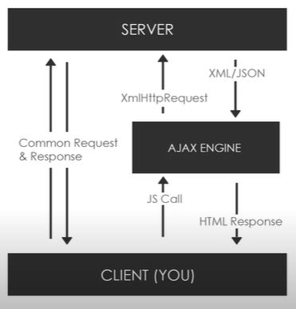

AJAX Basics
Links
//AJAX THEORY
Asynchronous Javascript & XML
Set of web Technologies
Send & receive data from a client to a server asynchronously, without reload
Does not interfere with current web page
XML has been replaced by JSON mostly
//IMAGE
Allows to make requests in the backgroun without reload or refresh our webpage.
Different ways to do it. We will be using Javascript
We make a HmlHttpRequest (XHR) Object:
API in the form of object, provided by browser's JS, methods, can be used with other protocols other than HTTP (but it is the most common).
Server returns data in JSON, XML, text.

// Libraries / Methods
jQuery, Axios, Superagent, Fetch API, Prototype, Node HTTP
//SETUP
Need to be running a Server -> XAMPP
Folder in htdocs (coding/others/ajax)
//Basic
XMLHttpRequest();
xhr.open('GET', 'sample.txt', true); // xhr.open('GET', 'https://api.github.com/users', true);
xhr.onload = function(){...}
xhr.send();
JSON.parse(this.responseText);